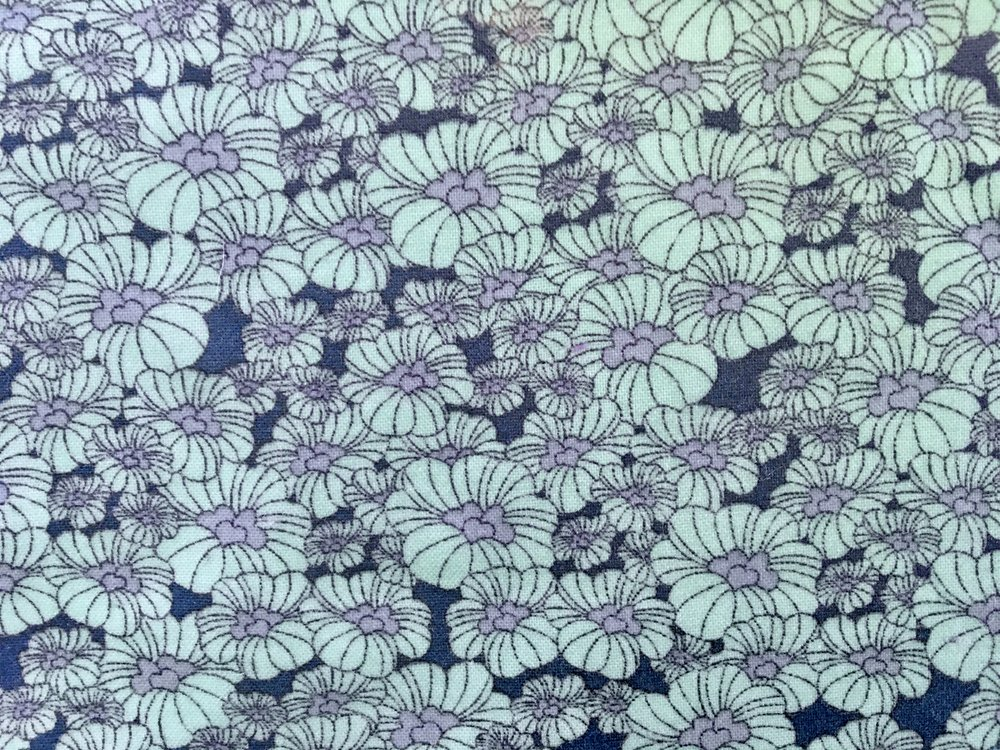

Blue Floral
My wax wraps are made from beeswax, jojoba oil, pine resin and cotton fabric. Every wax wrap is 10 inches by 10 inches.
Star Wars
My wax wraps are made from beeswax, jojoba oil, pine resin and cotton fabric. Every wax wrap is 10 inches by 10 inches.

Painted Feathers
My wax wraps are made from beeswax, jojoba oil, pine resin and cotton fabric. Every wax wrap is 10 inches by 10 inches.